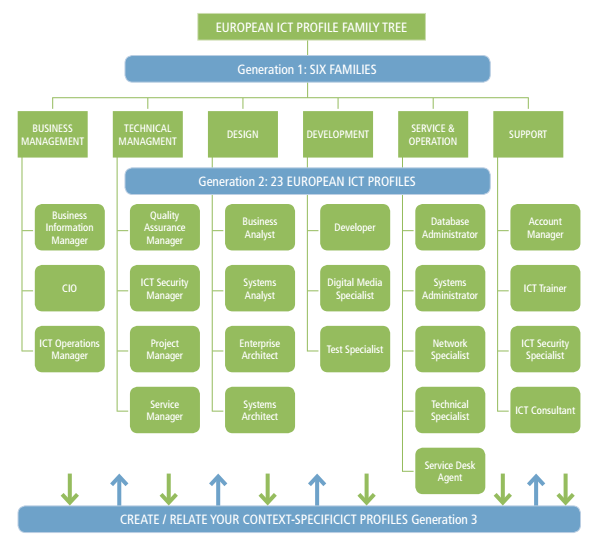
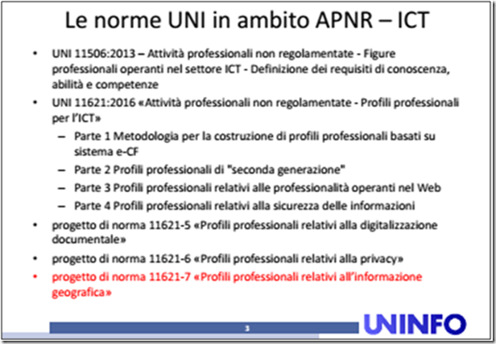

Nel corso dell’estate il Gruppo di Lavoro UNINFO “Profili professionali relativi all’informazione geografica” ha iniziato a operare. Alla prima riunione del 17 giugno (un sintetico resoconto è disponibile qui), ne è seguita una seconda, il 28 luglio, ed è già stato calendarizzato il terzo incontro, il 14 ottobre p.v. Ricordo che questo organismo ha il compito di provvedere alla stesura della nuova proposta di norma sui profili professionali riguardanti le figure professionali che operano nel settore Geo-ICT.
Per elaborare tale norma verrà seguita la metodologia basata sul sistema European e-Competence Framework (e-CF), già adottata –ricorderà chi ne ha seguito il processo- per definire il profilo del Geographic Information Manager.
In estrema sintesi, l’e-CF è uno strumento messo a punto per razionalizzare il gran numero di profili ICT e descrizioni degli stessi utilizzati in ambito business e formazione in Europa. Per questo fine, sono stati creati 23 Profili ICT, strutturati in sei famiglie (nel gergo dell’e-CF, di generazione 1) che coprono l’intero processo di business dell’ICT (gestione business, gestione tecnica, progettazione, sviluppo, esercizio & servizi e supporto). I 23 generici Profili professionali (così detti della generazione 2) rappresentano la cima dell’albero genealogico della Famiglia dei Profili Europei ICT, come rappresentato nella figura qui sotto.

I profili possono essere usati dai diversi stakeholder europei come riferimento, o come punto di partenza per sviluppare ulteriori generazioni di profili, nello nostro caso quelli riguardanti il settore dell’Informazione Geografica.
Nel contesto delle attività normative UNINFO, l’attività del nostro GdL è quindi inserita all’interno della definizione di profili di terza generazione (norma multi-parte 11621-N), seguita dalla Commissione tecnica “Attività professionali non regolamentate (PNR) – Figure professionali operanti nel settore ICT“. La tabella nel seguito riassume lo stato dell’arte delle norme APNR–ICT, aggiornate con l’avvio del nostro gruppo di lavoro.
Il progetto di norma 11621-7, che ci riguarda, completerà alcune delle aree non definite dalla UNI 11506, definendo i relativi profili professionali nel campo dell’informazione geografica richiesti dal mercato.

Per chi desidera approfondire il sistema e-CF, consiglio prima di tutto di riprendere la presentazione illustrata da Roberto Scano, in occasione dell’incontro pubblico per la presentazione del GIM, presso la Link Campus University, il 18 giugno 2015.
Naturalmente, sul sito http://www.ecompetences.eu/it/ sono disponibili tutti i documenti dell’e-CF: la descrizione (parte I), le Linee Guida (parte II), Metodologia (parte III) e Case Studies (parte IV), questi ultimi disponibili solo in inglese.
Può risultare uno studio impegnativo. Posso suggerire di iniziare invece con la lettura dei profili ICT, “CEN Workshop Agreement – European ICT Professional Profiles”, e tenere i quattro testi per consultazione. Questo documento illustra diffusamente la filosofia seguita per creare i Profili ICT europei e i vantaggi che questo sistema offre, nonché l’approccio metodologico seguito per individuare e descrivere i profili ICT.
Vengono quindi descritti I 23 Profili professionali di riferimento europeo e ulteriori schemi, rappresentanti i Profili da differenti prospettive: ad esempio, relazioni in ambito lavorativo, orientamento tecnico/business, e-Competence assegnate e risultati attesi (deliverable), questi attribuiti in termini di responsabilità di risultato (accountable), di esecuzione o, ancora, di contribuzione.
Il documento, fornisce inoltre una guida pratica dell’e-CF, per creare propri Profili di Generazione 3. Consiglio di fermare l’attenzione su questa parte conclusiva, in quanto essa descrive il percorso che il Gruppo di Lavoro del progetto di norma 11621-7, si appresta a intraprendere.
Infine, il Glossario presentato al termine del documento, può essere utile per acquisire familiarità con la terminologia dell’e-CF.